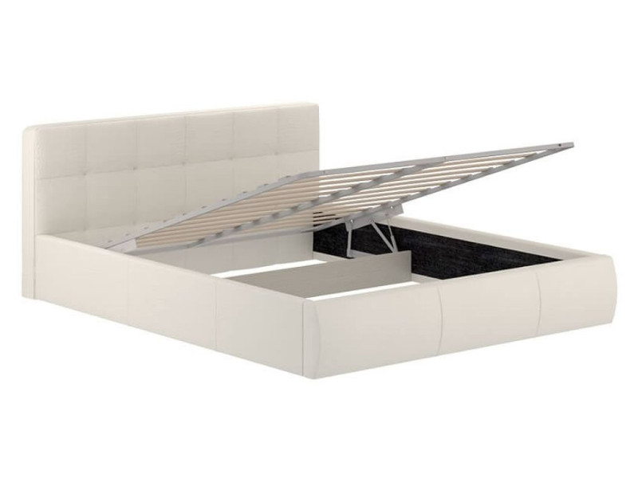

|
|
Столплит Мебель |
Войти Зарегистрироваться |
| Главная | Каталог | Контакты |
|
Главная Каталог Диваны Шкафы Кровати Столы Контакты |
Кровать "Оскар" с подъемным механизмом (180х200) Описание товараФункциональная кровать "Оскар" с надежным подъемным механизмом и вместительным бельевым ящиком. Современный дизайн с лаконичным изголовьем. Характеристики товара
Подробное описание товараКровать "Оскар" - идеальное решение для тех, кто ценит практичность и экономию пространства. Благодаря подъемному механизму на газовых амортизаторах, основание с матрасом легко поднимается, открывая доступ к большому коробу для хранения постельных принадлежностей, одеял, подушек и других вещей. Лаконичный дизайн кровати легко впишется в современный интерьер. Преимущества модели:
Материалы и уходКаркас кровати выполнен из ЛДСП, основание - металлическое. Обивка из экокожи или рогожки (в зависимости от выбора) отличается прочностью и простотой ухода. Рекомендуется регулярная чистка пылесосом. Пятна с экокожи удаляются влажной тканью, с рогожки - специальными средствами для мебельных тканей. |


|
| © 2025 Столплит. Все права защищены. | ||